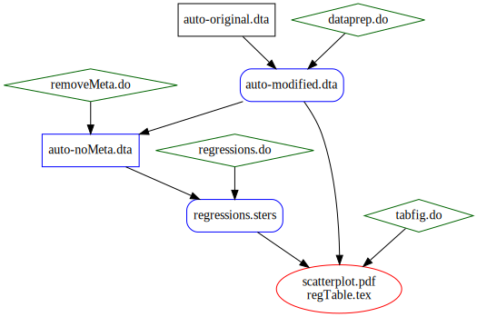

Separation of Concerns Part 2: Separating Metadata and Data¶
In Part 1, we improved our workflow by separating the regression analysis from the creation and formatting of tables and figures. This saves the step of re-running our regressions unnecessarily if we want to tweak our tables or figures. (Remember, we are imagining that these regressions take a very long time.)
However, a problem remained: suppose we need to edit the labels on our variables, either to fix a mistake or make an improvement. The variable labels are metadata stored in the dataset auto-modified.dta. Because auto-modified.dta is a dependency of regressions.tex, any changes to auto-modified.dta will lead statacons to rebuild regressions.tex, i.e., re-run regressions.do. However, we should not have to re-run regressions.do: since none of the underlying data have changed, only the labels, the regression results will not change.
To handle this situation properly, we need to figure out a way to re-run regressions if and only if the data in auto-modified.dta have changed, while re-creating the tables and figures if and only if any of the following have occured: the regression results in regression.sters have changed, the data in auto-modified.dta have changed; or the metadata (e.g., variable labels, value labels) have changed.
We might first think to address this using the options for complete_datasignature.ado. However, this will not provide a satisfactory answer. As an exercise, think through why neither the LabelsFormatsOnly nor the DataOnly option would give the right outcome.
To address this problem, we need to make regressions.sters depend only on the data in auto-modified.dta. We can do this by creating auto-nometa.dta by removing all metadata from auto-modified.dta, as in removeMeta.do:
//removeMeta.do
use "outputs/auto-modified.dta", clear
// Remove labels
qui ds
loc allVars `r(varlist)'
foreach V of loc allVars {
label variable `V'
}
label drop _all
// Save new data (without labels)
save "outputs/auto-noMeta.dta", replace
// See that labels are gone
lab dir
lab li
desc, f
Now we will make regressions.sters depend on auto-nometa.dta instead of auto-modified.dta, altering both regressions.do and our SConstruct.
// regressions.do
version 16.1
use "outputs/auto-noMeta.dta", clear
// Linear regression
regress price mpg
eststo linear
// Quadratic regression
regress price mpg mpg_sqd
eststo quadratic
// save linear and quadratic regression results in .sters file
estwrite linear quadratic using "outputs/regressions.sters", ///
reproducible replace
exit
Our workflow is as follows:

This is encoded in our SConstruct file:
# **** Setup from pystatacons package *****
import pystatacons
env = pystatacons.init_env()
# use sconsign specific to metadata exercise
SConsignFile(".sconsignMetadata")
# dataprep
cmd_dataprep = env.StataBuild(
target = ['outputs/auto-modified.dta'],
source = 'code/dataprep.do',
depends=['inputs/auto-original.dta']
)
# remove Meta
cmd_removeMeta = env.StataBuild(
target=['outputs/auto-noMeta.dta'],
source='code/removeMeta.do',
depends=['outputs/auto-modified.dta']
)
# Regression
cmd_regressions = env.StataBuild(
target = 'outputs/regressions.sters',
source = 'code/regressions.do',
depends=['outputs/auto-noMeta.dta']
)
# Table and Figure
cmd_tabfig = env.StataBuild(
target = ['outputs/scatterplot.pdf',
'outputs/regTable.tex'],
source = 'code/tabfig.do',
depends=['outputs/auto-modified.dta',
'outputs/regressions.sters']
)
We can see why this will help us avoid re-running regressions.do unnecessarily -- observe that when variable labels change, the signature of auto-modified.dta changes but the signature of auto-nometa.dta does not.
. do code/dataprep.do
. // dataprep.do
. version 16.1
.
. use "inputs/auto-original.dta", clear
(1978 Automobile Data)
.
. generate mpg_sqd = mpg^2
. label variable mpg_sqd "Mileage (mpg) squared"
.
. save "outputs/auto-modified.dta", replace
file outputs/auto-modified.dta saved
.
end of do-file
. qui:use "outputs/auto-modified.dta",clear
. complete_datasignature, labels_formats_only
74:13(15616):2430311699:721316426:2077751729
. loc sig_modified "`r(signature)'"
. qui:do code/removeMeta.do
. qui:use "outputs/auto-noMeta.dta",clear
. complete_datasignature, labels_formats_only
74:13(15616):2430311699:721316426:215091797
. loc sig_nometa "`r(signature)'"
The signature of auto-modified.dta is 74:13(15616):2430311699:721316426:2077751729 , and that of auto-noMeta.dta is 74:13(15616):2430311699:721316426:215091797. Note that the first four segments of the two signatures, pertaining to the data, are the same, and the only difference is in the last segment, pertaining to the labels.
Now we further edit dataprep.do to make an additional change to the labels.
// dataprep.do
version 16.1
use "inputs/auto-original.dta", clear
generate mpg_sqd = mpg^2
label variable mpg_sqd "Mileage (mpg) squared"
label variable price "Price (USD)"
save "outputs/auto-modified.dta", replace
. do code/dataprep.do
. // dataprep.do
. version 16.1
.
. use "inputs/auto-original.dta", clear
(1978 Automobile Data)
.
. generate mpg_sqd = mpg^2
. label variable mpg_sqd "Mileage (mpg) squared"
.
. label variable price "Price (USD)"
.
. save "outputs/auto-modified.dta", replace
file outputs/auto-modified.dta saved
.
end of do-file
. qui:use "outputs/auto-modified.dta",clear
. complete_datasignature, labels_formats_only
74:13(15616):2430311699:721316426:2443606894
. loc sig_modified "`r(signature)'"
. qui:do code/removeMeta.do
. qui:use "outputs/auto-noMeta.dta",clear
. complete_datasignature, labels_formats_only
74:13(15616):2430311699:721316426:215091797
. loc sig_nometa "`r(signature)'"
.
Notice that the signature of auto-modified.dta has changed again, to 74:13(15616):2430311699:721316426:2443606894 , although only in the fourth segment, corresponding to the labels. The signature of auto-noMeta.dta has not changed.
Let's think through what will happen in statacons. regTable.tex will continue to depend on regressions.sters and auto-modified.dta -- through its dependency on regressions.sters, we will update regTable.tex if the regression results change; through its dependency on auto-modified.dta we will also update it if the metadata (variable or value labels) change, even if the underlying data have not changed.
We now run the process through statacons:
. statacons, file(SConstruct-metadata) clean
scons: Reading SConscript files ...
scons: done reading SConscript files.
scons: Cleaning targets ...
Removed outputs\auto-modified.dta
Removed outputs\auto-noMeta.dta
Removed outputs\regressions.sters
Removed outputs\scatterplot.pdf
Removed outputs\regTable.tex
scons: done cleaning targets.
. statacons, file(SConstruct-metadata)
scons: Reading SConscript files ...
Using 'LabelsFormatsOnly' custom_datasignature.
Calculates timestamp-independent checksum of dataset,
including variable formats, variable labels and value labels.
Edit use_custom_datasignature in config_project.ini to change.
(other options are Strict, DataOnly, False)
scons: done reading SConscript files.
scons: Building targets ...
stata_run(["outputs\auto-modified.dta"], ["code\dataprep.do"])
Running: "C:\Program Files\Stata16\StataMP-64.exe" /e do "code\dataprep.do".
Starting in hidden desktop (pid=29184).
stata_run(["outputs\auto-noMeta.dta"], ["code\removeMeta.do"])
Running: "C:\Program Files\Stata16\StataMP-64.exe" /e do "code\removeMeta.do".
Starting in hidden desktop (pid=32596).
stata_run(["outputs\regressions.sters"], ["code\regressions.do"])
Running: "C:\Program Files\Stata16\StataMP-64.exe" /e do "code\regressions.do".
Starting in hidden desktop (pid=4832).
stata_run(["outputs\scatterplot.pdf", "outputs\regTable.tex"], ["code\tabfig.do
> "])
Running: "C:\Program Files\Stata16\StataMP-64.exe" /e do "code\tabfig.do".
Starting in hidden desktop (pid=29072).
scons: done building targets.
Exercise -- Reattach Labels to auto-noMeta.dta¶
One simplifying aspect of the above is that, since estout / esttab use the variable labels of the dataset in memory, we do not need to reattach the labels to auto-noMeta.dta -- we can just load auto-modified.dta when we create regTable.tex and estout will use the correct labels. If we were using other tools to produce our tables, we might need to use a different workflow.
Imagine that, instead of storing our regression results in regressions.sters, we stored them in a dataset regressions.dta that had variable names but no variable labels. As an exercise: (1) save the variable labels from auto-modified.dta and (2) use the saved metadata to include the new variable labels in regressions.dta.